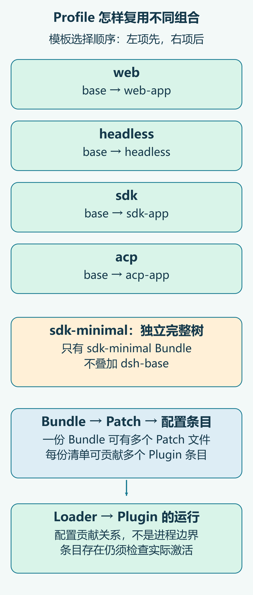
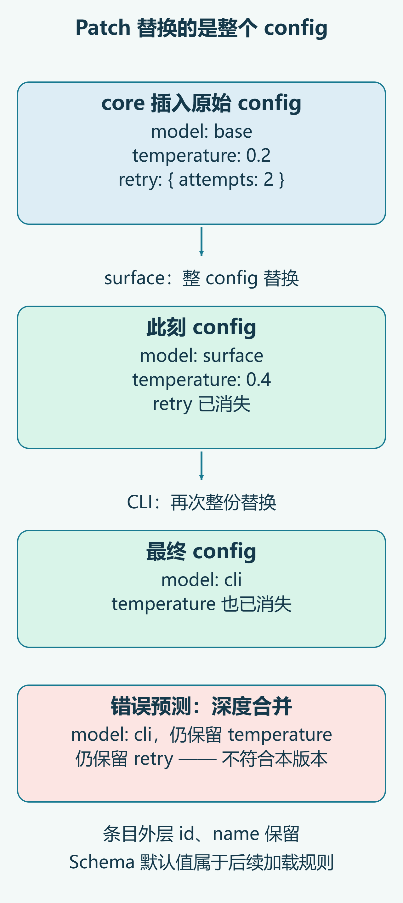
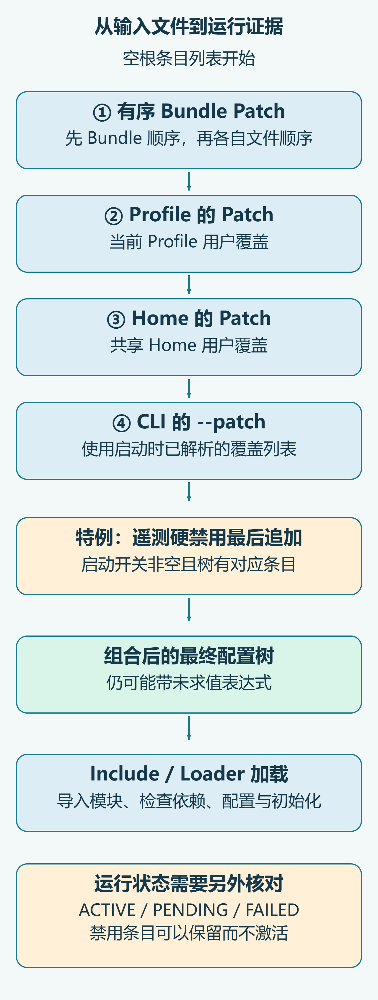
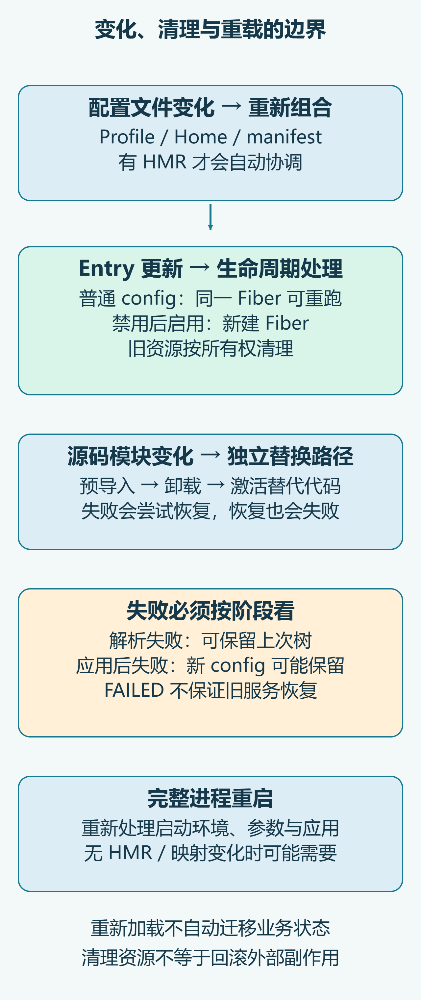

H08 作者审阅页 · 未发布。实际 LessonMarkdown 的静态渲染，折叠答案可展开；课程版本的复制交互已另经 React 挂载测试。图片在本页映射为相邻文件，不改变教材的 /course-media 路径。
动态组装 Agent 系统：Profile、Bundle 与 Patch
140～185 分钟（分三段；作者估算，实际时长待试读，环境准备另计）
同一个项目助手，为什么要维护三套运行器？
H07已经让日志插件能可靠退出。下一次启动时，团队又有三种需要：运营打开Web界面交互；自动任务在Headless模式执行一次就结束；另一个程序通过SDK调用。模型适配、工具与会话能力大体相同，入口、工具集合和退出方式却不同。
如果复制三套Agent Runtime，修复会话问题要改三处，换模型时可能漏改一个入口，部署时还要解释为什么一次性任务带着Web服务器。即使把代码共享出去，三份完整配置也可能逐渐漂移。我们的分析：可复用的组合层能集中共享选择，同时允许应用只覆盖自己的差异；代价是排错时必须追查“这一行来自哪层”。
这节只解决一个问题：怎样从声明推导出这次要装配的插件树，再用运行证据判断它究竟装起来了没有？ 官方事实锁定Commit f3803c96974ad4a94195fb97e5c637e9c2a3afe3，Cordis为 4.0.6-alpha.1。course-*、h08* 是教学命名；官方算法与真实运行另有明确标记。
六分钟回顾：选择、连接、参与、退出
H04回答“选择哪种应用并从哪里启动”；H05回答“插件贡献什么、服务由谁提供、Context从哪里取得能力”；H06回答“多个插件怎样按约定参与一次动作”；H07回答“运行失效后谁撤销登记、谁等待资源退出”。H08新增的是决定装哪些条目、用哪份配置，以及变化后怎样重新对齐运行。
Stage 1 1.5版本管理提供比较配置差异的习惯；Stage 2 2.8部署区分配置、构建与运行位置。这里只借用这些阅读方法，不把旧课配置规则说成Harness实现。链接可选，本课不要求额外购买权限。
JSON中的对象保存键值，数组保存顺序；YAML也能表达这两类数据。下文 bundles: [A, B] 是先A后B，不是无序集合。id是配置项身份，name是要加载的模块标识，config是交给插件的数据。模块能导入、服务已注册、插件已激活，仍是三件事。依赖 inject 也不会替你安装缺失的包。
五个角色，先落到实际文件
Profile（运行配置档）保存“一套应用怎样组合”：通常位于Harness Home的 profiles/<name>，其 package.json 声明有序Bundle，也记录安装依赖；自己的 cordis.patch.yml 保存用户覆盖。Profile不是单个插件定义，更不是正在运行的Fiber。Profile结构与路径、目录约束。
下面是随附Headless模板的组合关系，排版缩短，包名与顺序保留。这是声明示例，本课不启动真实Headless任务。
{
"dsh": {
"profile": {
"bundles": ["@deepseek-ai/dsh-base", "@deepseek-ai/dsh-headless"]
}
}
}Bundle（组合包）是可分发的配置层。它在自己的manifest声明 dsh.bundle.patch，指向一个Patch文件或有序文件列表。比如base的声明指向 ./cordis.patch.yml；web-app声明在主Patch后依次列出四个preset Patch。因此“一个Bundle”等于“一份YAML”的说法也过窄。
Plugin是实际代码贡献，Patch是修改配置清单的操作列表，Loader是导入模块、维护配置条目并推动挂载的服务。一个Bundle可以插入多个Plugin条目，也能修改或禁用之前的条目；Bundle本身不会因为出现在bundles数组里，就自动变成一个运行中的Fiber。 bundlePatchFiles负责展开文件列表；Loader职责负责运行接线。
把它类比成装配单：Profile选择几份可复用方案，Bundle贡献条目，Patch修订清单，Loader照最终清单接入代码。类比到这里为止：真实配置可以有表达式，插件可以产生副作用，清单并非天然安全的纯文本。
图一只画模板组成关系，先找四种共享base的模式，再找独立的例外。

| 随附Profile | 有序Bundle（省略共同包名前缀） | 应用差异及默认HMR |
|---|---|---|
| web | dsh-base → dsh-web-app | 浏览器及Host能力；base的配置HMR默认可用 |
| headless | dsh-base → dsh-headless | 一次性runner；应用层禁用hmr条目 |
| sdk | dsh-base → dsh-sdk-app | SDK JSON-RPC stdio；应用层禁用hmr |
| acp | dsh-base → dsh-acp-app | ACP stdio；应用层禁用hmr |
| sdk-minimal | 只有dsh-sdk-minimal | 独立完整配置树，不含base，也没有hmr条目 |
模板依据official-bundles:10–25。已有Profile能被用户修改，名字相同不证明仍是默认树。minimal也不表示权限小：其独立配置明确有danger-full-access、策略行。本课仅解析这些真实配置，不运行其中的Shell或模型。
Patch：改的是条目哪一层？
Patch先理解为“对既有装配清单的一次明确修订”。它不是Git diff，也不是把几个YAML文件逐行拼接。官方 applyEntryPatches(data, patches, warn) 输入条目列表与操作列表，按顺序定位和写入，返回组合后的条目；缺失目标等情况报告警告并跳过。实际算法57–133行。
先读下面的教学输入。包名虚构，但操作语法沿用官方规则；不执行模型。
- insert:
- id: model
name: course-model
config:
model: base
temperature: 0.2
retry: { attempts: 2 }
- id: model
config:
model: surface
temperature: 0.4第一项在根列表追加条目，并把新ID纳入后续查找；第二项找到model行，保留其id和name，把整个config替换成 {model: surface, temperature: 0.4}。原来的retry消失。再追加 {id: model, config: {model: cli}}，temperature也消失，最终只剩 {model: cli}。
算法在条目层逐键覆盖；当键是config时，值就是整个对象。它没有进入config内部递归合并。要保留retry，应在新的config中明确重述它。插件自己的Schema稍后可能补默认值，但那是加载阶段的另一条规则，不是Patch悄悄继承了旧值。
核心两行来自120–123行：
for (const [key, value] of Object.entries(overrides)) {
if (key === 'id') continue
target[key] = value
}图二把正确结果与常见错误预测放在一起。先看消失的字段，再看后层是否重述了它们。

插入、身份保护与开关
无id的 insert 追加根条目；带id的 insert 是向目标组追加子条目，要求目标存在且带 group 标记。算法递归索引组中的config数组，后面的Patch可按子条目ID定位。它不会读取一个 cordis:include 指向的另一个文件并跨文件查目标。插入与索引分支69–104行。
- id: audit
disabled: true
- id: audit
disabled: false这保留audit配置条目，先禁用再启用；最终false胜出。当前讨论普通插件行，group 标记行有自己的启用特例，不把上述规则不加条件套给所有组。Entry.disabled会考虑祖先与表达式，见79–103行。
非insert操作要有id。可选的name是身份断言：提供了且不匹配现有name，就警告并跳过，不用它把旧插件改名成新插件。更换实现应设计明确的条目移除/新增或禁用/插入方案，并复核依赖，不能把“config可替换”误解为“Patch的name可任意替换模块”。目标不存在、插入目标不是组、name不匹配都不是正常修改成功。检查分支107–123行。
给可覆盖条目使用明确且不冲突的稳定ID。Patch用它定位，Loader用它比较同一条目。不要把模块name、Fiber uid和条目id混成一个标识；同一插件定义可以有多个配置条目，每次重新挂载也可能有新Fiber。
配置层：按顺序算，不按文件大小猜
正常Profile的常规组合从空列表开始：按manifest中的Bundle顺序、每个Bundle内声明的文件顺序应用Patch；然后Profile自己的文件；再Home文件；最后启动时解析出的 --patch 列表。后层对同一字段的写入胜出，不涉及该字段的操作则保留前值。readProfilePatches:74–85。
这里还有一个必须保留的实际边界：函数最后按启动时 DSH_TELEMETRY_DISABLED 追加遥测禁用Patch。任何非空值，连字符串 0、false 也表示关闭；只在树有对应条目时添加。“CLI永远最高”只能用于前述常规四层，不能覆盖这项硬禁用。 开关规则40–55行。本课不重讲H04的环境来源优先级，那是不同问题。
把上面的model条目继续扩展，实践A会逐字使用这组数据：
| 应用到哪层 | 该层给model写入的完整config | 此刻还保留哪些配置字段？ |
|---|---|---|
| core Bundle插入 | model=base，temperature=0.2，retry.attempts=2 | 三个字段都在 |
| surface Bundle | model=surface，temperature=0.4 | retry已消失 |
| Profile | model=profile，temperature=0.6 | 仍只有两个字段 |
| Home | model=home，timeout=30 | temperature也消失，timeout新出现 |
| CLI extra.yml | model=cli | timeout消失，只有model |
audit在core插入为false，Home改true，CLI再改false。最后两行的name与id没变。顺序倒过来会改变结果；例如surface先应用时model尚不存在，该Patch会警告并跳过，后来的core插入也不会使过去的操作重新执行。
图三从输入文件一路画到运行判断。它最下面故意分成两块，提醒你最后的YAML仍不是运行结果。

至少保留三份证据：源文件说明“写了什么”；组合结果说明“按规则算出什么”；运行状态说明“成功导入、满足依赖并完成初始化了什么”。带 !!js 的值在解析时保留为表达式节点，Loader在对应条目激活时求值；dump里的一段表达式不是已经计算出的服务值。表达式与树载体处理。
真实Headless组合：共享核心怎样变成一次性应用
先读base文件开头1–33行：它以一个insert贡献共享核心，hmr默认 root: []；后面有模型、会话、工具与策略行。文件注释明确：条目排列不承担服务激活语义，实际由服务可用性驱动。Bundle层的顺序重要，不意味着Plugin写在第一行就一定先完成初始化。
Headless层10–46行做了四类修改：替换system-prompt的config；插入headless-startup和headless-runner；重述sandbox-policy配置并声明headlessStartup依赖；禁用hmr和交互式凭据相关条目。核心没有被复制成另一套Runtime，应用层只写差异。
看一个真实插入片段，省去无关行，字段保留：
- insert:
- id: headless-startup
name: '@deepseek-ai/dsh-headless/startup'
- id: headless-runner
name: '@deepseek-ai/dsh-headless'
inject: [headlessStartup]
config:
task: !!js ctx.headlessStartup.task
sessionId: !!js ctx.headlessStartup.sessionId
json: !!js ctx.headlessStartup.jsonrunner配置存在，还要等headlessStartup服务；服务不存在时不会因为它排第二行就执行任务。表达式依赖当前服务，最终配置树也不会为你创造该服务。默认Headless树没有webserver行，避免把它画成“Web关掉界面后跑一次”。
用户若在Profile给真实 session-title 只写 config: {maxTitleBytes: 120}，组合后的config就只剩这个字段。base原有fallbackMaxWords=5和fallbackMaxBytes=40不会由Patch继承；真实插件是否再补默认值，要另查Schema。原始字段在base:60–66。修复时先确认想保留的行为，再明确重述完整config，而非把缺字段都判作启动必然失败。
作者实验解析五个真实模板及其所有声明Patch，保存完整最终树；Headless真实行、minimal例外和用户标题覆盖都有断言。这里没有激活完整默认应用。完整树证据见交付包 evidence/official-profiles.json；不能把JSON解析通过当作服务器、模型或持久化集成通过。
稳定身份：配置更新不总等于新建Fiber
Loader的Entry是一个配置节点，Plugin定义是可加载代码，Fiber是这次应用的运行对象。EntryGroup按id比较新旧列表；同一ID可复用Entry，缺失ID则生成随机值。重新读取成全新对象时，没有显式ID的行可能被当成删除旧行、添加新行。 比较与创建、生成ID。
稳定ID避免无关编辑造成身份漂移，不保证任何改动都不重新执行apply。普通config有效变化会进入Fiber.update，通常清理后重跑同一Fiber；插件可以拦截内部update。Include正是一个例子：路径没变时更新子列表，避免把整个Include及所有孩子都重建。volatile等特例不在本课展开。Entry.update:134–180、Include拦截190–201。
对实践B的普通Provider行，变化可以这样读：
| 操作 | 配置节点与运行结果 | H07的退出机制怎样参与 |
|---|---|---|
| 稳定ID、配置完全相同 | 同一Entry、同一Fiber，apply不重跑 | 不撤掉仍需要的运行 |
| 稳定ID、普通config改变 | 同一Entry、同一Fiber，清理后重跑 | 旧运行的登记先撤销，资源按所有权退出 |
| disabled=true | Entry保留，Provider Fiber显式dispose | Provider服务撤销，Consumer清理后PENDING |
| 再改false | 同一Entry创建新的Provider Fiber | 原Consumer仍被挂载，可随服务恢复重新加载 |
| 缺ID、重新读取新对象 | 旧Entry移除，新Entry与Fiber出现 | 无关文本编辑也可能造成不必要的卸载/挂载 |
禁用后不能说“原DISPOSED Fiber复活”。条目被保留与运行对象被保留不是一件事。H07的依赖恢复则可以是原Consumer Fiber再活跃；两条路径在同一次配置变更中同时发生。
Loader接管条目导入与生命周期，Include给一个子树提供文件读取、Patch应用与刷新；Group在同一树中管理子列表，Include会形成另一棵文件子树。ID作用域和Patch查找边界因此要结合所在树看，不能凭全局字符串相同就猜能覆盖到。
组还可以配置 isolate，把指定服务解析到独立的命名域（realm）：例如把一组Provider和Consumer放在同一个组域内，组外就不应假定能借用它的实现。true创建条目本地域，字符串标签可让使用同一标签的条目共享域，见Loader的realm选择。这是服务解析边界，与父子资源所有权、Agent能力可见范围是不同维度，也不是进程或操作系统安全隔离。本节认清关系，完整Agent作用域留后课；不把base与应用Bundle的叠层直接画成隔离域。
HMR、重新组合、重启：改动进了哪条路径？
HMR是热模块替换，也承担这里的配置变更协调。重新组合是重新读取组合输入、计算并应用条目；完整进程重启则重新经过启动环境、参数和应用准备。三者可以关联，但不是同一个操作。
base的 root: [] 意味着默认只做Profile配置相关监听，不等于监视所有源码。Headless、SDK、ACP的应用Patch禁用hmr；minimal没有它。Profile覆盖可以改变这些选择，也仍要满足HMR的依赖和宿主要求。HMR声明需要loader与timer；缺少必需服务时仍会等待，不能把写了hmr配置当作监视器已工作。架构说明25–29行、HMR初始化与监听。
Profile的manifest、Profile/Home Patch变更会经精确文件监听，在串行操作内调用reconcileProfile。它使用启动时保存的overlay内容；编辑原 --patch 文件不会让这份快照自动重读。.env、argv、需要新构建产物的变更也不能靠这条配置监听保证生效。无HMR的应用需要按应用关闭流程重启；源码映射移动或缓存不可比较等情况会报告restart-required，而不是假装新代码已经运行。Profile输入与overlays、reconcileProfile。
图四先分输入，再看失败发生在应用前还是应用后；箭头不是对所有异常的统一回滚保证。

失败要按阶段分别说
| 失败阶段 | 锁定版本的实际处理 | 能否宣称旧代码/状态无损保留？ |
|---|---|---|
| Include刷新读到坏YAML或非数组 | 捕获、记警告；读取成功前不提交新内容，保留上次树 | 对这一解析失败路径可说保留旧树 |
| Profile重组在应用新一代前失败 | finally尝试恢复先停掉的行与此前运行条目；映射拒绝可要求重启 | 恢复也可能报错，是尽力尝试 |
| 新一代已经应用，某插件apply失败 | 新条目/config可能保留，失败实例为FAILED；好兄弟可继续 | 不能说恢复旧配置，旧服务可能已撤销 |
| 普通config被Schema拒绝 | raw条目可能已更新，运行effective配置仍旧；日志记录拒绝 | 需同时看raw与effective，不能看一次树就下结论 |
| 源码模块预导入失败 | 缓存回退发生在旧运行卸载前 | 仍需看具体分支与导入副作用 |
| 模块替换激活失败 | 恢复缓存、尝试清理替代实例并重新登记旧插件；恢复失败记警告 | 无法保证恢复一定成功，更不等于外部副作用回滚 |
依据依次为Include.refresh:274–287、App Boot重组335–443、模块替换642–739。Schema反例见官方config-reload测试232–260，作者也运行了独立对应夹具。
Plugin Manager（插件管理器）负责持久化选择、条目开关及包操作；HMR负责监听、串行协调与运行重载。管理器写入成功不等于运行应用成功；它可以报告restart-required。Home/overlay仍可能覆盖Profile写下的开关。管理器条目与Bundle修改、应用与重启判断。本节不调用安装、删除或版本豁免操作。
HMR之所以接在H07后，是因为每次旧运行退出都需要可靠资源清理。恢复旧定义也会重新登记资源；没有Disposer的旧计时器不会因为缓存恢复自动消失。重新加载不自动迁移业务状态，通知变化也不自动成为持久会话事实。
精读路线：五个文件，各解决一个问题
| 顺序 | 只精读这些入口与分支 | 输入→处理→输出/失败 |
|---|---|---|
| 1 · app-boot/profile.ts | bundlePatchFiles、loadProfileDirectory、composeEntries | manifest→有序层；缺失/不兼容Bundle记录跳过，用户层错误仍抛 |
| 2 · app-boot/profile-context.ts | readProfilePatches | 当前文件+启动快照→完整Patch列表；此函数还没更新Loader |
| 3 · vendor/include/src/index.ts | applyEntryPatches | 空根/原树+操作→组合树；检查insert、目标、name与整config赋值 |
| 4 · loader/config/entry.ts | update、init | 新options→保留/卸载/更新/导入；运行结果还受依赖与Schema影响 |
| 5 · hmr/src/index.ts | Profile监听、reconcileProfile及模块替换catch | 文件变更→串行协调；按失败阶段判断恢复范围 |
这是阅读顺序。实际主线是Profile选层→读取Patch→组合→根Include→Loader条目→导入Plugin→Fiber按依赖激活。mountRootInclude会注册include/group内建，准备兼容性，再挂根Include；741–791行是辅助精读。另选读user-patches、config-reload、profile及HMR reconciliation/error测试的setup、action和assertions；定位不计为执行通过。
实践A：在运行程序之前手算五层
新建空练习目录，使用随课 a-profile.json、a-bundles.json 和五份YAML。它们对应前述五层表：course-core声明core.patch.yml，course-surface声明surface.patch.yml；Profile用户层用profile.patch.yml，Home层用home.patch.yml，CLI层用extra.yml。这里用教学文件名区分来源，真实Profile和Home文件都叫cordis.patch.yml。
只用Node即可运行下面的完整教学校验器。它实现平面条目、根insert、id/config/disabled子集，没有组、Include、表达式、服务或HMR；它不等于Harness Profile组合机制。作者另用官方applyEntryPatches读取同样五份YAML交叉核对。
想深入再看：实践 A 完整程序：compose.mjs
// 教学子集：平面条目、root insert、id/config/disabled；不是官方 Patch 实现。
import assert from 'node:assert/strict';
import { readFile } from 'node:fs/promises';
import { pathToFileURL } from 'node:url';
export const layers = [
{ source: 'bundle:core', patches: [{ insert: [
{ id: 'model', name: 'course-model', config: { model: 'base', temperature: 0.2, retry: { attempts: 2 } } },
{ id: 'audit', name: 'course-audit', disabled: false }
] }] },
{ source: 'bundle:surface', patches: [{ id: 'model', config: { model: 'surface', temperature: 0.4 } }] },
{ source: 'profile', patches: [{ id: 'model', config: { model: 'profile', temperature: 0.6 } }] },
{ source: 'home', patches: [{ id: 'model', config: { model: 'home', timeout: 30 } }, { id: 'audit', disabled: true }] },
{ source: 'cli:extra.yml', patches: [{ id: 'model', config: { model: 'cli' } }, { id: 'audit', disabled: false }] }
];
export function compose(input = layers) {
const rows = [], trace = [], warnings = [];
for (const layer of input) {
for (const patch of layer.patches) {
if (patch.insert) { rows.push(...structuredClone(patch.insert)); continue; }
const target = rows.find(row => row.id === patch.id);
if (!target) { warnings.push(`missing:${patch.id}`); continue; }
if ('config' in patch) target.config = structuredClone(patch.config);
if ('disabled' in patch) target.disabled = patch.disabled;
}
trace.push({ source: layer.source, rows: structuredClone(rows) });
}
return { rows, trace, warnings };
}
// 独立写出的答案：不调用 compose 来生成预期。
export const reference = {
order: ['bundle:core', 'bundle:surface', 'profile', 'home', 'cli:extra.yml'],
configs: [
{ model: 'base', temperature: 0.2, retry: { attempts: 2 } },
{ model: 'surface', temperature: 0.4 },
{ model: 'profile', temperature: 0.6 },
{ model: 'home', timeout: 30 },
{ model: 'cli' }
],
final: [
{ id: 'model', name: 'course-model', config: { model: 'cli' } },
{ id: 'audit', name: 'course-audit', disabled: false }
]
};
export function checkAnswer(answer) {
assert.deepEqual(answer, reference, '按每一层重算；config 不是深度合并');
}
if (process.argv[1] && import.meta.url === pathToFileURL(process.argv[1]).href) {
if (process.argv[2] === '--trace') console.log(JSON.stringify(compose(), null, 2));
else { checkAnswer(JSON.parse(await readFile(process.argv[2] ?? 'answer.json', 'utf8'))); console.log('PASS A：确定性答案；理由需另解释'); }
}将answer-template.json的结构填好后，逐条执行：
node compose.mjs --trace
node compose.mjs answer.json第一条仅显示程序轨迹，不代表你已作答；第二条逐字段检查自己的答案，错误会非零退出。把最后config错误地加上temperature=0.6应失败。作者还把实现改成深合并，原测试确实捕获错误，未修改正确预期求通过。
想深入再看：实践 A 详细参考答案
{
"order": [
"bundle:core",
"bundle:surface",
"profile",
"home",
"cli:extra.yml"
],
"configs": [
{
"model": "base",
"temperature": 0.2,
"retry": {
"attempts": 2
}
},
{
"model": "surface",
"temperature": 0.4
},
{
"model": "profile",
"temperature": 0.6
},
{
"model": "home",
"timeout": 30
},
{
"model": "cli"
}
],
"final": [
{
"id": "model",
"name": "course-model",
"config": {
"model": "cli"
}
},
{
"id": "audit",
"name": "course-audit",
"disabled": false
}
]
}retry在surface整份替换时丢失；temperature在Home替换时丢失；timeout在CLI替换时丢失。id和name位于条目外层，没有被这些config操作覆盖。audit被Home禁用后又被CLI启用。
若surface先于core，surface对尚不存在的model发出缺目标警告并跳过；core随后插入原始三个字段。接着Profile又完整替换，所以本题最终仍是CLI结果；最终相同不表示中间过程相同。自由解释不按中文关键词打分，要指出发生警告的实际时点。
实践B：用真实Loader观察两个插件重组
这次没有自制运行器。程序挂真实Cordis Loader，把Provider与Consumer作为两个内建教学插件交给官方条目树；内建方式避免安装外部包，仍经过真实Entry/Group/Fiber。它没有经过Profile读取，不能称为完整Harness应用。
想深入再看：实践 B 完整程序：reconfigure.ts
// 真实 Cordis + 官方 Loader；插件体只记录内存轨迹，不模拟框架。
import assert from 'node:assert/strict';
import { Context } from '@deepseek-ai/cordis';
import Loader from '@deepseek-ai/cordis-plugin-loader';
export async function reconfigure() {
const ctx = new Context(), trace: string[] = [];
let runs = 0, cleanups = 0;
await ctx.plugin(Loader);
ctx.loader.builtins.probe = {
apply(inner: Context, config: { label: string }) {
runs++; trace.push(`apply:${config.label}`);
inner.provide('h08Probe', config.label);
inner.effect(() => () => { cleanups++; trace.push(`clean:${config.label}`); });
}
};
ctx.loader.builtins.consumer = {
inject: ['h08Probe'],
apply(inner: Context) {
const label = inner.get('h08Probe');
trace.push(`consumer:${label}`);
inner.effect(() => () => { trace.push(`consumer-clean:${label}`); });
}
};
const rows = (label: string, disabled = false) => [
{ id: 'provider', name: 'cordis:probe', disabled, config: { label } },
{ id: 'consumer', name: 'cordis:consumer' }
];
const settle = async () => { await ctx.loader.await(); };
try {
await ctx.loader.root.update(rows('v1')); await settle();
const entry = ctx.loader.resolve('provider'), original = entry.fiber!, consumer = ctx.loader.resolve('consumer').fiber!;
assert.equal(original.state, 2); assert.equal(consumer.state, 2);
await ctx.loader.root.update(rows('v1')); await settle();
assert.equal(entry.fiber, original); assert.equal(runs, 1, '稳定 ID + 相同配置不重跑');
await ctx.loader.root.update(rows('v2')); await settle();
assert.equal(entry.fiber, original); assert.equal(runs, 2, '普通 config 更新重跑同一 Fiber');
const stableUpdateSameFiber = entry.fiber === original;
await ctx.loader.root.update(rows('v2', true)); await settle();
assert.equal(ctx.loader.resolve('provider'), entry); assert.equal(entry.fiber!.uid, null);
assert.equal(consumer.state, 0); assert.equal(ctx.get('h08Probe'), undefined);
const disabled = { providerState: entry.fiber!.state, consumerState: consumer.state, configPresent: true };
await ctx.loader.root.update(rows('v2')); await settle();
assert.equal(ctx.loader.resolve('provider'), entry); assert.notEqual(entry.fiber, original);
assert.equal(consumer, ctx.loader.resolve('consumer').fiber); assert.equal(consumer.state, 2);
return { runs, cleanups, stableUpdateSameFiber, disabled,
reenableNewFiber: entry.fiber !== original, consumerSameFiber: true, trace: [...trace] };
} finally { await ctx.fiber.dispose(); }
}
export async function anonymousComparison(stable: boolean) {
const ctx = new Context(); let runs = 0, cleanups = 0;
await ctx.plugin(Loader);
ctx.loader.builtins.noop = { apply(inner: Context) {
runs++; inner.effect(() => () => { cleanups++; });
} };
// 每次读取返回全新对象；避免复用被 ensureId 写入过的同一个对象。
const read = () => [{ ...(stable ? { id: 'stable' } : {}), name: 'cordis:noop', config: { value: 1 } }];
try {
await ctx.loader.root.update(read() as any); await ctx.loader.await();
const first = Object.values(ctx.loader.store)[0], uid = first.fiber!.uid;
await ctx.loader.root.update(read() as any); await ctx.loader.await();
const next = Object.values(ctx.loader.store)[0];
return { stable, runs, cleanups, sameEntry: first === next, sameUid: uid === next.fiber!.uid };
} finally { await ctx.fiber.dispose(); }
}想深入再看：实践 B 详细参考答案
初次Provider与Consumer均ACTIVE。相同ID、相同config再次应用，Provider仍只运行1次；改v2后普通更新使它清理v1、运行v2，但仍为同一个Fiber。
禁用后Provider Entry还在，旧Provider Fiber为DISPOSED/uid=null；Consumer因缺h08Probe清理后PENDING，实例仍保留。重新启用创建新Provider Fiber，原Consumer恢复ACTIVE。这不是旧Provider Fiber复活。
在最终夹具释放之前，Provider runs=3、cleanups=2；trace中有三次consumer加载、两次consumer清理。函数复制了此时trace，再由finally释放夹具，不能把返回计数当作进程所有清理总数。稳定ID对照为runs=1、cleanups=0、sameEntry=true、sameUid=true；缺ID对照为2、1、false、false。
框架内部并发可能使不同资源的清理日志交错，因此测试核对象身份、状态、次数和必要因果，不承诺所有兄弟日志具有唯一全局顺序。重组仍需H07正确的资源所有权。
实践C：真实Harness配置诊断与组合设计
这里调用固定源码的Profile/App Boot API，只写新OS临时目录。它解析五个官方Profile完整配置而不激活默认应用；另外用两个本地纯内存插件启动真实boot夹具。它不读取、修改个人Harness Home，也不调用模型、网络或包安装。
想深入再看：实践 C 完整程序：harness.ts
// 真实 App Boot / Profile helper；所有写入仅在新 OS 临时目录。
import assert from 'node:assert/strict';
import { mkdtemp, mkdir, writeFile, readFile, copyFile, readdir } from 'node:fs/promises';
import { tmpdir } from 'node:os';
import { join, resolve, dirname } from 'node:path';
import { pathToFileURL } from 'node:url';
import { boot, recomposeProfile, loadProfileDirectory, readProfilePatches, composeEntries } from '@deepseek-ai/dsh-app-boot';
import { PROFILE_TEMPLATES } from '@deepseek-ai/dsh-official-bundles';
export async function fixture() {
const dir = await mkdtemp(join(tmpdir(), 'aifoundry-h08-boot-'));
const root = join(dir, 'cordis.yml'); await writeFile(root, '[]\n');
const plugin = join(dir, 'probe.mjs');
await writeFile(plugin, `export function apply(ctx, config) {
if (config?.fail) throw Error('COURSE_APPLY_FAILURE');
ctx.provide('h08Value', config?.value ?? 'unset');
}\n`);
const needs = join(dir, 'needs.mjs');
await writeFile(needs, "export const inject=['h08Missing']; export function apply(ctx) { ctx.provide('h08Consumer', true); }\n");
return { dir, root, plugin: pathToFileURL(plugin).href, needs: pathToFileURL(needs).href };
}
export const entryById = (ctx: any, id: string) => [...ctx.loader.entries()].find((entry: any) => entry.options.id === id) as any;
export async function diagnosis() {
const f = await fixture();
const patches = [{ insert: [{ id: 'good', name: f.plugin, config: { value: 'v1' } }, { id: 'optional-needs', name: f.needs }] }];
const ctx = await boot('h08', f.root, patches);
try {
const pending = entryById(ctx, 'optional-needs');
assert.equal(pending.fiber.state, 0); assert.equal(ctx.get('h08Consumer'), undefined);
assert.equal(entryById(ctx, 'good').fiber.state, 2);
const before = entryById(ctx, 'good').fiber;
await assert.rejects(recomposeProfile(ctx, [{ insert: [
{ id: 'good', name: f.plugin, config: { value: 'v2', fail: true } },
{ id: 'optional-needs', name: f.needs }
] }], 'h08'), /COURSE_APPLY_FAILURE/);
assert.deepEqual(entryById(ctx, 'good').options.config, { value: 'v2', fail: true });
assert.equal(entryById(ctx, 'good').fiber.state, 3);
assert.equal(ctx.get('h08Value'), undefined, '应用后的失败没有自动恢复 v1 服务');
await recomposeProfile(ctx, patches, 'h08');
assert.equal(ctx.get('h08Value'), 'v1');
return { directory: f.dir, missingService: 'PENDING, sibling ACTIVE',
applyFailure: 'FAILED; new config retained; old service absent',
recovered: ctx.get('h08Value'), priorFiberReusedForOrdinaryUpdate: entryById(ctx, 'good').fiber === before };
} finally { await ctx.fiber.dispose(); }
}
export async function officialProfiles(source: string) {
const dir = await mkdtemp(join(tmpdir(), 'aifoundry-h08-profiles-'));
const install = join(dir, 'installation'), home = join(dir, 'home');
await mkdir(install); await mkdir(home);
const anchor = join(install, 'package.json'); await writeFile(anchor, '{"name":"course-installation","version":"1.0.0"}');
// 只复制官方 manifest 和 YAML 字节；不安装或激活其中的业务插件。
for (const bundle of ['base', 'web-app', 'headless', 'sdk-app', 'sdk-minimal', 'acp-app']) {
const from = join(source, 'packages/bundle', bundle);
const meta = JSON.parse(await readFile(join(from, 'package.json'), 'utf8'));
const to = join(install, 'node_modules', meta.name);
for (const relative of await readdir(from, { recursive: true })) {
if (relative !== 'package.json' && !/\.ya?ml$/.test(relative)) continue;
const target = join(to, relative); await mkdir(dirname(target), { recursive: true });
await copyFile(join(from, relative), target);
}
}
const results: any = {};
for (const [name, template] of Object.entries(PROFILE_TEMPLATES)) {
const profileDir = join(home, 'profiles', name); await mkdir(profileDir, { recursive: true });
await writeFile(join(profileDir, 'package.json'), JSON.stringify({ dsh: { profile: template } }));
await writeFile(join(profileDir, 'cordis.patch.yml'), '[]\n');
const profile = loadProfileDirectory('h08', profileDir, anchor);
assert.equal(profile.skippedBundles.length, 0);
const patches = readProfilePatches('h08', { name, dir: profileDir, patchPath: profile.patchPath,
installAnchor: anchor, cwd: dir, home, startedBundles: template.bundles, overlays: [], telemetryDisabledEnv: undefined }, profile);
const warnings: string[] = [], rows = composeEntries([patches], message => warnings.push(message));
assert.equal(warnings.length, 0);
results[name] = { bundles: [...template.bundles], patchFiles: profile.layers.flatMap(layer => layer.patchPaths), rows };
}
const headless = results.headless.rows;
assert.equal(headless.find((r: any) => r.id === 'hmr').disabled, true);
assert.ok(headless.some((r: any) => r.id === 'headless-runner'));
assert.ok(!headless.some((r: any) => r.id === 'webserver'));
assert.deepEqual(results['sdk-minimal'].bundles, ['@deepseek-ai/dsh-sdk-minimal']);
assert.ok(!results['sdk-minimal'].rows.some((r: any) => r.id === 'hmr'));
const userLayers = [
...loadProfileDirectory('h08', join(home, 'profiles/headless'), anchor).layers.map(layer => layer.patches),
[{ id: 'session-title', config: { maxTitleBytes: 120 } }]
];
const patched = composeEntries(userLayers as any).find(r => r.id === 'session-title');
assert.deepEqual(patched!.config, { maxTitleBytes: 120 });
// 缺包与版本不兼容：读取层记录跳过，不能谎报为同一种插件 apply 错误。
const badBundle = join(install, 'node_modules/course-incompatible'); await mkdir(badBundle, { recursive: true });
await writeFile(join(badBundle, 'package.json'), JSON.stringify({ name: 'course-incompatible', version: '1.0.0', engines: { dsh: '>=99.0.0' }, dsh: { bundle: { patch: './cordis.patch.yml' } } }));
const broken = join(home, 'profiles/broken'); await mkdir(broken);
await writeFile(join(broken, 'package.json'), JSON.stringify({ dsh: { profile: { bundles: ['course-missing', 'course-incompatible'] } } }));
const failed = loadProfileDirectory('h08', broken, anchor);
assert.equal(failed.layers.length, 0); assert.equal(failed.skippedBundles.length, 2);
assert.match(failed.skippedBundles[0].reason, /cannot resolve profile bundle/);
assert.match(failed.skippedBundles[1].reason, /incompatible/);
return { dir, profiles: results, skippedBundles: failed.skippedBundles, userPatchedTitle: patched };
}想深入再看：实践 C 详细参考答案与设计取舍
覆盖故障在Patch组合层：最终session-title.config只有maxTitleBytes。拿base原值与用户Patch逐层对照，再看Schema是否补默认值；修复时重述期望的三个字段，或明确接受插件默认值。不要为丢字段就启动真实模型证明。
缺服务发生在运行依赖层：模块可以已经导入，Entry存在，Fiber仍PENDING，apply未执行。本课optional-needs等待h08Missing，good仍ACTIVE。启动时若同一缺依赖行使用必需ID webserver，App Boot审查会拒绝并释放部分树；required ID列表不要求树必须拥有每个名字，缺席或禁用的必需行另有规则。定位要查inject、同作用域提供方和状态，不能通过删inject掩盖必需能力。恢复正确提供方后再核激活和业务输出。
Bundle故障在Profile读取层：loadProfileDirectory将缺包、不支持平台、不兼容或坏Bundle Patch记入skippedBundles，继续其他可读层；manifest所列选择没有因此等于已加载。用户自己的坏Patch仍抛错，不是都静默跳过。检查解析锚点、包manifest、dsh.bundle.patch与兼容性诊断；修复可用包和版本后重新解析，再按HMR/重启条件应用。不应为教学直接放宽兼容性豁免或碰个人安装。真实读取分支678–714。
精简方案可以选course-core先插入summary-provider、summary-consumer，后选course-headless贡献一次性入口；Consumer显式inject摘要服务，用户层重述Provider完整config以选择固定输出。若两项能力由同一Bundle已经声明，也可只选这一Bundle，理由是组合变化点尚少，不需要额外拆包。省掉Web减少入口依赖；省掉HMR意味着编辑后要重启。类型和命名不证明服务存在，纯摘要夹具也不赋予真实文件或Shell权限。完整官方Agent应用还需要Agent、模型、工具、会话等兼容组合，本设计只展示装配取舍，不虚称两个插件就是完整Harness。
额外失败证据：recomposeProfile应用 {value:v2, fail:true} 后拒绝；good保留新config、Fiber为FAILED、旧h08Value服务消失。再显式提交原配置可恢复v1。Schema拒绝的另一路径则raw值invalid、effective值1、服务仍1。两种结果不能互相替代，故障阶段必须进入诊断表。
运行与四层验收
想深入再看：统一运行入口：demo.ts
import { compose } from './compose.mjs';
import { reconfigure, anonymousComparison } from './reconfigure.ts';
import { diagnosis } from './harness.ts';
console.log(JSON.stringify({ A: compose(), B: await reconfigure(),
stable: await anonymousComparison(true), anonymous: await anonymousComparison(false), C: await diagnosis() }, null, 2));作者在AI Foundry根用已有依赖执行，运行器先核固定源码字节，在新临时目录运行，不安装到项目、不清理目录：
node docs/deepseek-harness-v2/h08/scripts/run-labs.mjs已有独立、锁定Commit且依赖齐备的Harness checkout时，也可将随课lab文件复制到新建 tmp/h08-composition-lab，在该目录运行下列命令。使用官方Node >=24.9.0；作者的bootstrap.mjs仅供隔离运行器解析现有依赖，普通官方checkout不需要它：
node --import tsx --test composition.test.ts
node --import tsx demo.ts其中官方Profile解析测试还需要 HARNESS_SOURCE_CACHE 指向该checkout、H08_PROFILE_REPORT 指向新练习目录的report.json。目录选择必须在自己的新夹具范围。测试文件 composition.test.ts 随课提供；完整程序与正文代码逐字同步。
| 验证层级 | 本轮实际范围 | 不能外推什么 |
|---|---|---|
| 自制模拟器确定性测试 | A手算、错误答案与深合并变异 | 不证明官方Loader运行 |
| 真实Cordis与Loader | B实例、ID、开关、依赖恢复 | 不证明Profile启动或文件监听 |
| 真实Harness Profile/App Boot | 真实五模板只读解析；磁盘自定义Profile至boot/重组；失败夹具 | 不证明完整随附应用成功启动 |
| 完整官方应用集成 | NOT_RUN | 真实Web/Headless/SDK/ACP、原生HMR和完整官方套件均未计PASS |
总计20项是作者编写的行为测试，另有预期失败变异。官方测试有递归目录清理，本轮仅选读对应断言，未直接执行其清理钩子。学员试读、真实时长、独立外审仍待验证。
七道思考题：把规则变成判断
想深入再看：思考 1 参考答案
让共享层先提供核心条目，Web/Headless/SDK应用层随后覆盖差异，各Profile引用相应有序列表。共享修复无需复制三份；如果应用层重述了同一config，仍要检查它是否把共享修复覆盖掉。顺序只保证Patch的作用先后，不保证异步服务初始化先后，后者由inject和实际可用性决定。跨组合回归仍是维护成本。
想深入再看：思考 2 参考答案
会漏掉它贡献的多个条目、对旧行的修改、文件内外顺序及各行不同运行状态。Bundle是分发组合描述的包，实际代码入口可以也是包的一部分，但不让整个配置层自动成为单个Fiber。一个行可以PENDING，另一个ACTIVE，禁用行甚至没有新Fiber；不能给Bundle一个总ACTIVE就当所有能力都工作。
想深入再看：思考 3 参考答案
稳定ID让Loader识别同一Entry。实践B中相同配置不重跑，普通config更新清理后重跑同一Fiber，禁用显式释放旧Fiber而保留Entry，再启用新建Fiber。缺ID的新解析对象会得到新ID而造成删除/新增。故ID稳定只是比较依据；具体生命周期由变化、插件update拦截与依赖决定，不能把Entry身份等同Fiber身份。
想深入再看：思考 4 参考答案
最终原始config只有model；provider与timeout没有由Patch深合并保留。应查插件Schema默认值和必需字段、后续更高层、表达式及实际effective配置。完整重述想保留的字段可消除这一隐含继承假设，但不能机械复制秘密或失效选项。配置接受、插件激活与实际模型调用成功仍需分开验证。
想深入再看：思考 5 参考答案
模块不存在可能在导入阶段就没有Fiber，日志说明解析/导入失败；缺服务则模块可导入、Fiber为PENDING、apply尚未执行。还有disabled=true、不合法config或apply抛错的其他分支。初次boot的必需条目会影响启动审查，可选失败可只警告并保留好兄弟；重组后的判断也有自己的规则，不能用一条“配置错则全进程退出”概括。
想深入再看：思考 6 参考答案
坏YAML在Include读取提交前失败可保留旧树；模块预导入失败有缓存回退，发生在旧运行卸载前；Profile应用后apply失败可能已经撤销旧服务并保留新FAILED条目。模块激活失败路径虽尝试重登记旧插件，恢复自己也会失败，只能称尽力。旧定义重新运行也不恢复其全部内存状态或撤销外部写入。H07的清理是动态替换前提，不是事务回滚或状态迁移保证。
想深入再看：思考 7 参考答案
先确认是Profile文件哪条覆盖，再看后面的Home、启动overlay与特定硬开关；检查Bundle自身是否成功读取、目标ID/name和所在树是否匹配。再查HMR是否存在、是否执行了重组或报告重启，最后核条目disabled与实际Fiber/服务。管理器保存的选择和本次运行不是同一份证据。灵活性把变化集中到组合层，也增加来源、时点、兼容性和生命周期的交叉检查；可用少量明确层、稳定ID及回归减少成本。
下一问：装配好的系统，怎样持有一个Agent实例？
这次项目助手没有再复制三套运行器：Profile选择有序Bundle，Patch明确修改条目，Include与Loader把最终清单接到真实插件；运行是否成立，仍取决于代码、配置、依赖和生命周期。第二模块至此把能力连接、事件参与、资源退出与动态组装接到同一个问题上。
保留五层计算、真实身份轨迹与分层故障报告。现在我们知道Agent能力怎样被装配起来，下一步需要研究运行中的Agent实例如何创建、持有和销毁。 这正是H09的下一问，本课不提前实现Agent创建事务或Agent Loop，也不因作者验收通过自动发布课程。